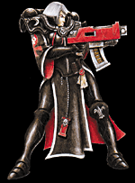
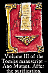
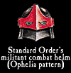
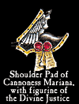

Imperial Forces |
Force Disposition Introduction |
Ork Forces |
|

Battered and shamed by the loss of their Arch-Abbey in Tempestora Hive, the spirit of the Order of Our Martyred Lady has begun to recover and redouble in its zeal. Sister and Novice alike have all pledged to retake Tempestora and reclaim their Arch-Abbey, putting their absolute faith in the divine Emperor as they mercilessly crush all Ork armies they meet.
Their unshakeable determination spreads to any force they fight alongside and there have been many Imperial Guard officers who, inspired by the Sisters' presence, have also united behind the Order's vow. Throughout all the battles they have so far taken part in, the Sisters of the Order of Our Martyred Lady have made one thing clear to the Warbands they face - Orks have no place on Armageddon.
Based in the Convent Sanctorum on Ophelia VII, the Adepta Sororitas Order of Our Martyred Lady has convents throughout the galaxy and is one of the largest of the Orders Militant. Originally entitled the Order of the Fiery Heart, the Sisters changed their name within centuries after they were founded by Ecclesiarch Alexis XXII, in memory of the supreme sacrifice made by their patron, Saint Katherine.
The Sisters of Our Martyred Lady have ever since been a common sight throughout the Armageddon Sector, where they defend lone worlds from alien attack and strongly regulate the lives of all who fall under the jurisdiction of the Ecclesiarchy. The seat of their authority lies in the great Sanctorum of St. Katherine built high within the superstructure of Tempestora Hive, a centre of activity for all members of the Ecclesiarchy who dwell on Armageddon.
|
| ||||||||||||||||||||||||||||||||||||||||||||||||||||||||
|
When the Ork submersibles rose out of the polluted waters of the Boiling Sea, the Sisters of Our Martyred Lady were amongst the front line of defence of Tempestora Hive. The sheer surprise of the Ork's cunning strike left many Imperial units floundering in confusion and the aliens were able to dominate a sizeable portion of the underhive within a few short hours of the initial attack.  Suffering staggering losses as the Orks assaulted time and again, the Sisters were driven back through the dark, dank tunnels and recesses of Tempestora and then into the heart of the Hive itself. The Imperial command structure began to break down in the face of the rapidly moving Ork hordes, with many of the Hive Militia units being dispatched to reinforce positions that the Orks had already overrun. The defence quickly turned into a running battle for the Sisters and the scattered Militia they had managed to rally. The Orks themselves thrived in the chaotic assault and took full advantage of the Imperium's inability to stop them. It was not to be long before the Sisters of the Order had been pushed back to the immense armoured doors of their Sanctorum. Once on their sacred ground, the Sisters refusal to withdraw any further and the battle intensified as the Order rallied to the defence of their Sanctorum, desperately calling upon all able-bodied members of the Ecclesiarchy within to lay down their lives in an effort to withstand the alien assault.  Elsewhere throughout Tempestora Hive, the Orks were unbound, destroying any Imperial resistance piecemeal and proclaiming another victory under the Gork-given leadership of Warlord Ghazghkull. Outside the main doors of the Sanctorum, Sister and Ork died together, locked in mortal combat as, inch by inch, the alien’s sheer weight of numbers drove the Sisters backward. The Order of Our Martyred Lady fought bravely with bolter and flamer until, at last, a determined charge by Warboss Nargrim and his mega-armoured Nobz broke the back of the Sister's line. What followed was as darker time as the Order has ever recorded. The Sisters, withdrawing as they tried desperately to regroup one last time, were bodily torn apart by the unstoppable green tide that surged through the Sanctorum, eager to destroy the Sisters once and for all after they had dared to stand against the Orks for so long. An hour later, no humans were left alive in the Sanctorum. The Orks were Jubilant, for Tempestora was theirs.  After the fall of Tempestora, the Order of Our Martyred Lady could barely field the equivalent of three companies upon the battlefields of Armageddon. The loss of the Sanctorum sent shock waves throughout the entire Order, leading to many Novices questioning their faith in the divine Emperor. Though still reeling from this crushing defeat, the Order recovered quickly and has sworn to repel the Ork invaders and retake Tempestora at all costs. Though many Sisters are spread throughout Armageddon Prime and Secundus, they are united in this vow and have proved to be a great stabilising influence amongst the Imperial Guard regiments who fight alongside them. Their heroism and fanatical devotion to the Emperor has already been pivotal in repulsing several Ork assaults and the Order still remains a valued component in the tight defence of Armageddon.
| |||||||||||||||||||||||||||||||||||||||||||||||||||||||||